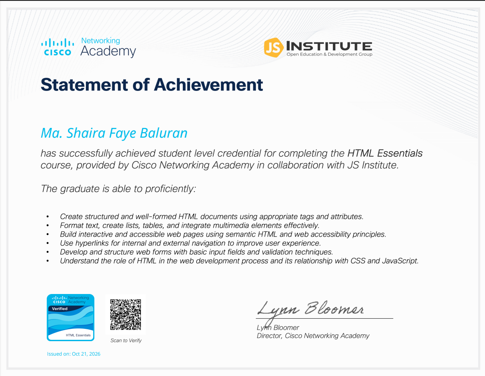
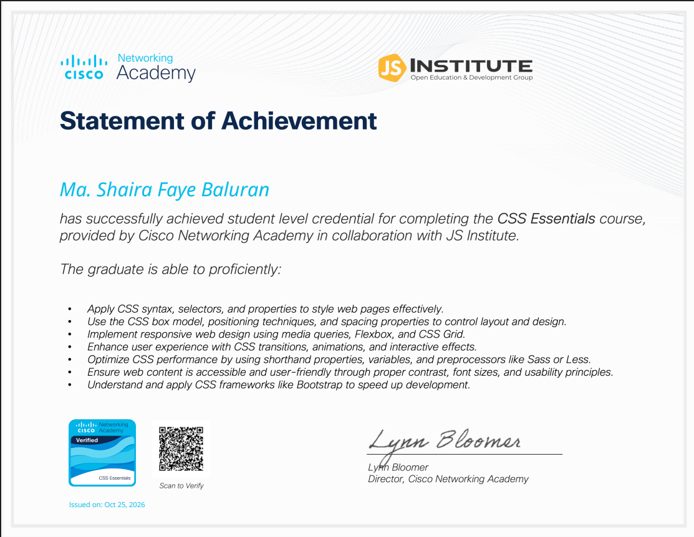
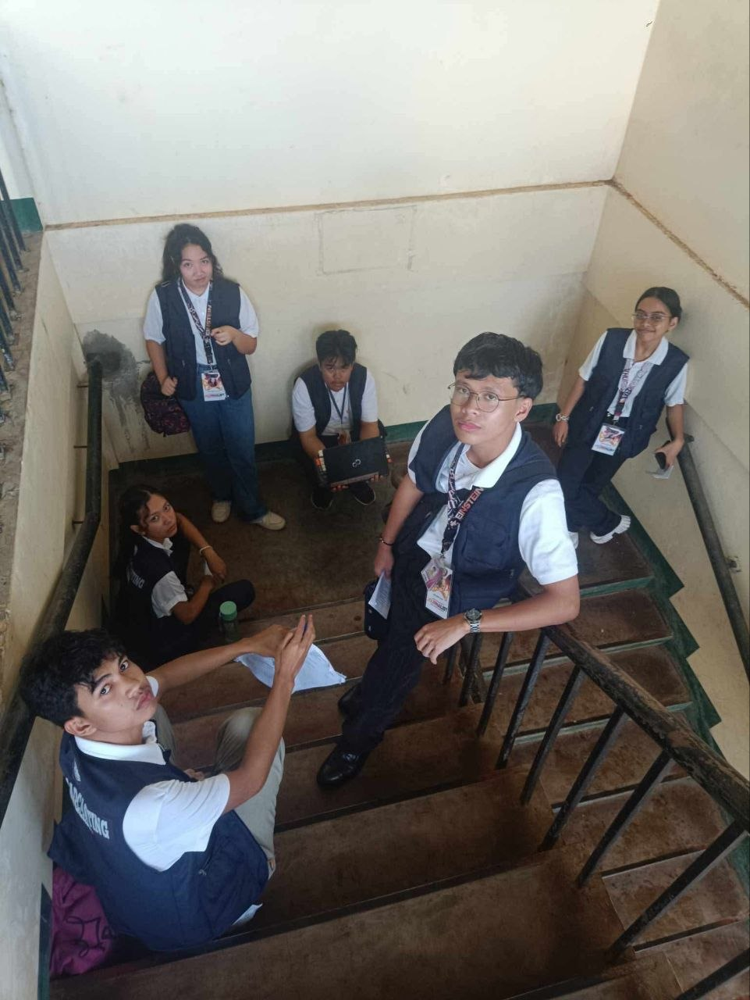

WHAT I CAN DO
My Skills
A collection of technical, creative, and communication skills I continue to develop.BUILDING FOR THE WEB
HTML & CSS
HTML helps me structure website content, while CSS allows me to style and arrange each element. I use both to create web pages with organized layouts, thoughtful colors, typography, and simple interactions. I am continuing to practice by improving this portfolio and building small web projects.
View My Certificates↗LEARNING MILESTONES
My Certificates


VOICE, PRESENCE & REPORTING
Radio Broadcasting
Radio broadcasting has helped me develop confidence in delivering information, speaking clearly, and connecting with an audience. It also allows me to practice preparation, teamwork, and communicating a message with purpose.


MADE BY HAND
Handicrafts
I enjoy creating handmade pieces such as satin flowers and crochet projects. These crafts let me explore creativity while practicing patience, attention to detail, and the ability to turn simple materials into something meaningful.